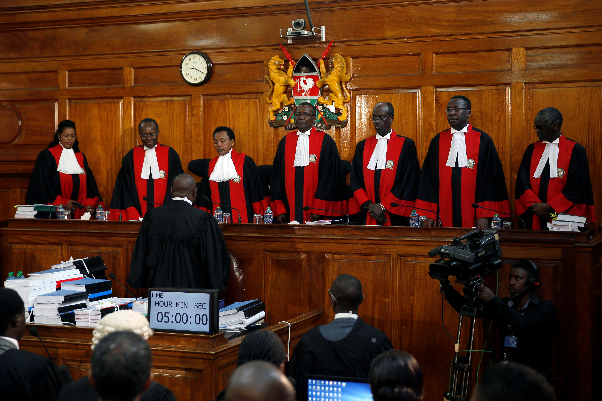

High Court
- A person has been validly elected as a member of the National Assembly
- The seat in the National Assembly of a member there of has become vacant
Court Martial Supreme Court
The Supreme Court is established under Article 163 of the Constitution which states that:
There is established the Supreme Court, which shall consists of-
- The Chief Justice, who shall be the President of the Courts;
- The Deputy Chief Justice, who shall-
- Deputise for the Chief Justice; and
- Be the vice-president of the Court; and
- Five other Judges.
The Supreme Court shall be properly constituted for the purposes of its purposes of its proceedings if it is composed of five judges.
The Supreme Courts shall have-
- Exclusive original jurisdiction to hear and determine disputes relating to the elections to the office of President arising under Article 140; and
- Subject to clause (4) and (5), appellate jurisdiction to hear and determine appeals from-
The Court of Appeal and Any other court or tribunal as prescribed by national legislation.
Kadhis Court
The court is presided over by the Chief Kadhi or a Kadhi.
A person to be appointed as a Chief Kadhi or Kadhi should have the following qualifications.
- Professes to the Muslim religion
- Possesses such knowledge of Muslim law which is applicable to any sect or sects of Muslims.
Article 170 of the Constitution states that 'the jurisdiction of a Kadhi's court shall extend to the determination of questions of Muslim law relating to:-
- Personal status,
- Marriage,
- Divorce or
- Inheritance in proceedings in which all the parties profess the Muslim religion."
 The High Court Judges during the Presidential Elections 2017.